UMLG Reference Manual
UML has 2 boolean properties that specifies the collection semantics of a property. They are,
These properties only make sense when the property has a upper multiplicity greater than 1. Together they specify whether a property will be one of the following,
UMLG has 4 corresponding java interfaces to represent the 4 collections.
org.umlg.runtime.collection.UmlgSetorg.umlg.runtime.collection.UmlgSequenceorg.umlg.runtime.collection.UmlgOrderedSetorg.umlg.runtime.collection.UmlgBagTo implement UmlgSet and UmlgSequence the standard java Set and List collection classes are used.
For UmlgBag google guava's Multiset is used
For UmlgOrderedSet apache collections' ListOrderedSet is used.
This implies that for any property with a upper multiplicity greater than 1 the property will be one of the 4 given types.
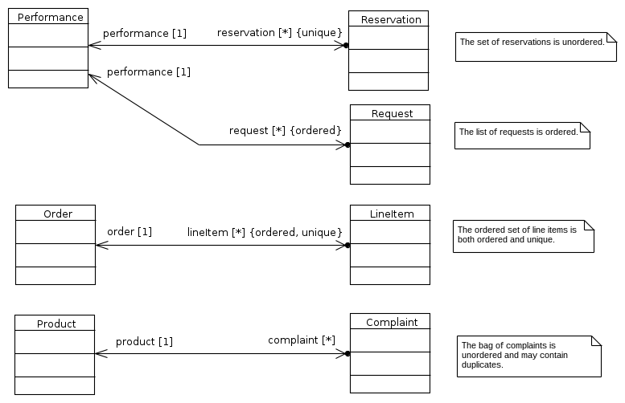
Illustrates {unique}
@Test
public void testSet() {
Performance p = new Performance();
Reservation r1 = new Reservation();
Reservation r2 = new Reservation();
p.addToReservation(r1);
p.addToReservation(r2);
UMLG.get().commit();
Assert.assertTrue(p.getReservation() instanceof UmlgSet);
Assert.assertTrue(p.getReservation() instanceof Set);
Assert.assertEquals(2, p.getReservation().size());
}
Illustrates {ordered}
@Test
public void testList() {
Performance p = new Performance();
Request r1 = new Request();
Request r2 = new Request();
p.addToRequest(r1);
p.addToRequest(r2);
UMLG.get().commit();
Assert.assertTrue(p.getRequest() instanceof UmlgSequence);
Assert.assertTrue(p.getRequest() instanceof List);
Assert.assertEquals(2, p.getRequest().size());
}
Illustrates {ordered, unique}
@Test
public void testOrderedSet() {
Order o = new Order();
LineItem l1 = new LineItem();
LineItem l2 = new LineItem();
o.addToLineItem(l1);
o.addToLineItem(l2);
UMLG.get().commit();
Assert.assertTrue(o.getLineItem() instanceof UmlgOrderedSet);
Assert.assertTrue(o.getLineItem() instanceof Set);
Assert.assertTrue(o.getLineItem() instanceof List);
Assert.assertEquals(2, o.getLineItem().size());
}
Illustrates {}
@Test
public void testBag() {
Product p = new Product();
Complaint c1 = new Complaint();
Complaint c2 = new Complaint();
p.addToComplaint(c1);
p.addToComplaint(c2);
UMLG.get().commit();
Assert.assertTrue(p.getComplaint() instanceof UmlgBag);
Assert.assertTrue(p.getComplaint() instanceof Multiset);
Assert.assertEquals(2, p.getComplaint().size());
}
From the UML specification.
A primitive type defines a predefined data type, without any relevant substructure (i.e., it has no parts in the context of UML). A primitive datatype may have an algebra and operations defined outside of UML, for example, mathematically.
UMLG supports UML's basic primitive types. These are,
java.lang.Booleanjava.lang.Integerjava.lang.Doublejava.lang.Stringjava.lang.Integer UnlimitedNatural is any integer >= 0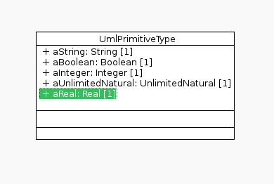
@Test
public void testUmlPrimitiveType() {
UmlPrimitiveType umlPrimitiveType = new UmlPrimitiveType();
umlPrimitiveType.setAString("This is a string");
umlPrimitiveType.setABoolean(true);
umlPrimitiveType.setAInteger(1);
umlPrimitiveType.setAUnlimitedNatural(1);
umlPrimitiveType.setAReal(1D);
db.commit();
//Ensure we are getting the values from the db, clearing any cached values in the object
umlPrimitiveType.reload();
Assert.assertEquals("This is a string", umlPrimitiveType.getAString());
Assert.assertEquals(true, umlPrimitiveType.getABoolean());
Assert.assertEquals(1, umlPrimitiveType.getAInteger(), 0);
Assert.assertEquals(1, umlPrimitiveType.getAUnlimitedNatural(), 0);
Assert.assertEquals(1D, umlPrimitiveType.getAReal(), 0);
}
UMLG supports UML's java primitive types. These are,
java.lang.Booleanjava.lang.Integerjava.lang.Longjava.lang.Floatjava.lang.Double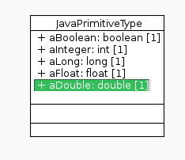
@Test
public void testJavaPrimitiveType() {
JavaPrimitiveType javaPrimitiveType = new JavaPrimitiveType();
javaPrimitiveType.setABoolean(true);
javaPrimitiveType.setAInteger(1);
javaPrimitiveType.setALong(1L);
javaPrimitiveType.setAFloat(1F);
javaPrimitiveType.setADouble(1D);
db.commit();
//Ensure we are getting the values from the db, clearing any cached values in the object
javaPrimitiveType.reload();
Assert.assertEquals(true, javaPrimitiveType.getABoolean());
Assert.assertEquals(1, javaPrimitiveType.getAInteger(), 0);
Assert.assertEquals(1L, javaPrimitiveType.getALong(), 0);
Assert.assertEquals(1F, javaPrimitiveType.getAFloat(), 0);
Assert.assertEquals(1D, javaPrimitiveType.getADouble(), 0);
}
From the UML specification.
A data type is a type whose instances are identified only by their value. A DataType may contain attributes to support the modeling of structured data types.
UMLG has its own library of data types. This is packaged in umlg-datatypes.uml. umlg-datatypes.uml is prepackaged with the application generated by the UMLG maven archetype. Otherwise copy umlg-datatypes.uml to the directory of your model and import the library into your model.
umlg-datatypes.uml contains the following data types,
java.lang.Stringorg.joda.time.DateTimeorg.joda.time.LocalDateorg.joda.time.LocalTime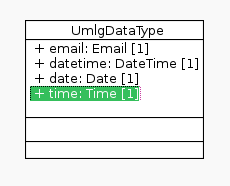
@Test
public void testUmlgDataType() {
UmlgDataType umlgDataType = new UmlgDataType();
umlgDataType.setEmail("john.smith@hero.com");
umlgDataType.setDatetime(new DateTime(UmlgFormatter.parseDateTime("2014-05-04 12:12:12")));
umlgDataType.setDate(new LocalDate(UmlgFormatter.parseDate("2014-05-04")));
umlgDataType.setTime(new LocalTime(UmlgFormatter.parseTime("12:12")));
db.commit();
//Ensure we are getting the values from the db, clearing any cached values in the object
umlgDataType.reload();
Assert.assertEquals("john.smith@hero.com", umlgDataType.getEmail());
Assert.assertEquals("2014-05-04 12:12:12", UmlgFormatter.format(umlgDataType.getDatetime()));
Assert.assertEquals("2014-05-04", UmlgFormatter.format(umlgDataType.getDate()));
Assert.assertEquals("12:12", UmlgFormatter.format(umlgDataType.getTime()));
}
UMLG uses stereotypes to validate the data types. For most simple validations this is faster and easier than using ocl constraints to implement the validation logic.
UML Primitive Type validation stereotypes
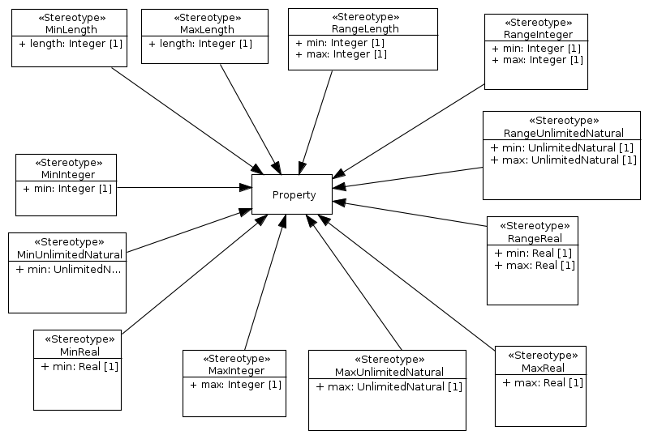
UML Java Primitive Type validation stereotypes
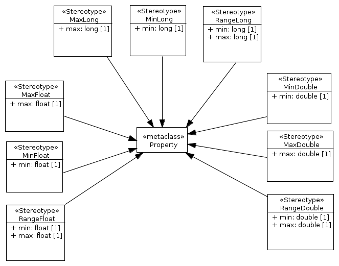
The UMLG validation profile is packaged in validation.profile.uml.
validation.profile.uml is prepackaged with the application generated by the UMLG maven archetype. Otherwise copy validation.profile.uml to the directory of your model and imported the library into your model.
validation.profile.uml contains the following stereotypes,
To use the a UMLG validation stereotype you need to apply the stereotype to a property and specify the max, min or range values.
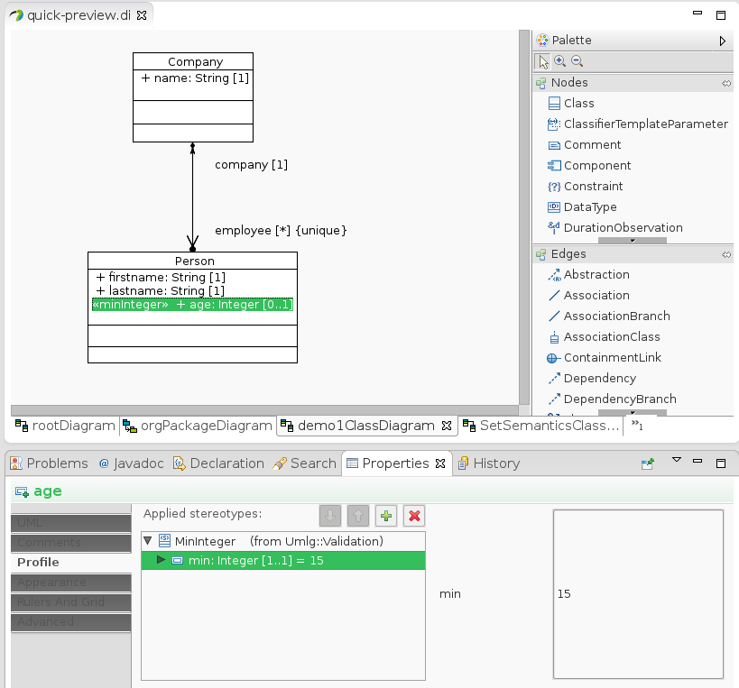
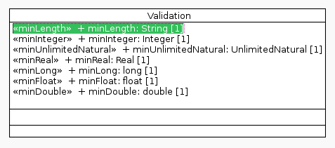
@Test(expected = UmlgConstraintViolationException.class)
public void testUmlgMinLengthValidationFails() {
Validation validation = new Validation();
//The stereotype validation that the minimum length must be at least 5
validation.setMinLength("1234");
}
@Test(expected = UmlgConstraintViolationException.class)
public void testUmlgMinIntegerValidationFails() {
Validation validation = new Validation();
//The stereotype validation that the minimum value must be at least 5
validation.setMinInteger(4);
}
@Test(expected = UmlgConstraintViolationException.class)
public void testUmlgMinUnlimitedNaturalValidationFails() {
Validation validation = new Validation();
//The stereotype validation that the minimum value must be at least 5
validation.setMinUnlimitedNatural(4);
}
@Test(expected = UmlgConstraintViolationException.class)
public void testUmlgMinRealValidationFails() {
Validation validation = new Validation();
//The stereotype validation that the minimum value must be at least 5.123
validation.setMinReal(5.122D);
}
@Test(expected = UmlgConstraintViolationException.class)
public void testUmlgMinLongValidationFails() {
Validation validation = new Validation();
//The stereotype validation that the minimum value must be at least 5
validation.setMinLong(4L);
}
@Test(expected = UmlgConstraintViolationException.class)
public void testUmlgMinFloatValidationFails() {
Validation validation = new Validation();
//The stereotype validation that the minimum value must be at least 5.123
validation.setMinFloat(5.122F);
}
@Test(expected = UmlgConstraintViolationException.class)
public void testUmlgMinDoubleValidationFails() {
Validation validation = new Validation();
//The stereotype validation that the minimum value must be at least 5.123
validation.setMinDouble(5.122D);
}
@Test
public void testUmlgValidationPasses() {
Validation validation = new Validation();
//The stereotype validation that the minimum length must be at least 5
validation.setMinLength("12345");
validation.setMinInteger(5);
validation.setMinUnlimitedNatural(5);
validation.setMinReal(5.123D);
validation.setMinLong(5L);
validation.setMinFloat(5.123F);
validation.setMinDouble(5.123D);
}
From the UML specification.
An association describes a set of tuples whose values refer to typed instances. An instance of an association is called a link.A link is a tuple with one value for each end of the association, where each value is an instance of the type of the end.
An association specifies a semantic relationship that can occur between typed instances. It has at least two ends represented by properties, each of which is connected to the type of the end. More than one end of the association may have the same type.
...
An association may represent a composite aggregation (i.e., a whole/part relationship). Only binary associations can be aggregations. Composite aggregation is a strong form of aggregation that requires a part instance be included in at most one composite at a time. If a composite is deleted, all of its parts are normally deleted with it. Note that a part can (where allowed) be removed from a composite before the composite is deleted, and thus not be deleted as part of the composite. Compositions may be linked in a directed acyclic graph with transitive deletion characteristics; that is, deleting an element in one part of the graph will also result in the deletion of all elements of the subgraph below that element. Composition is represented by the isComposite attribute on the part end of the association being set to true.
Navigability means instances participating in links at runtime (instances of an association) can be accessed efficiently from instances participating in links at the other ends of the association. The precise mechanism by which such access is achieved is implementation specific. If an end is not navigable, access from the other ends may or may not be possible, and if it is, it might not be efficient.
UMLG implements aggregation none and composite.
composite aggregation is represented in UML with a diamond at the other member end of the association.
The example below models the composite associations of a software window.
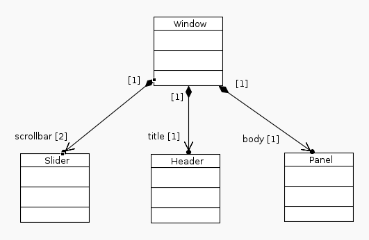
For entities with a composite parent UMLG generates an additional constructor that takes the parent as parameter.
/**
* Using the constructor with the composite parent as parameter
*/
@Test
public void testAssociationCompositeWithCompositeConstructor() {
Window window = new Window();
Slider slider1 = new Slider(window);
Slider slider2 = new Slider(window);
Header header = new Header(window);
Panel panel = new Panel(window);
db.commit();
Assert.assertEquals(2, window.getScrollbar().size());
Assert.assertEquals(header, window.getTitle());
Assert.assertEquals(panel, window.getBody());
}
/**
* Using the default constructor
*/
@Test
public void testAssociationCompositeWithDefaultConstructor() {
Window window = new Window();
Slider slider1 = new Slider();
window.addToScrollbar(slider1);
Slider slider2 = new Slider();
window.addToScrollbar(slider2);
Header header = new Header();
window.addToTitle(header);
Panel panel = new Panel();
window.addToBody(panel);
db.commit();
Assert.assertEquals(2, window.getScrollbar().size());
Assert.assertEquals(header, window.getTitle());
Assert.assertEquals(panel, window.getBody());
}
Deleting the parent object also deletes its composite children!
This is because the semantics of a composite relationship implies a strong whole/part relationship.
@Test
public void testAssociationCompositeDeletion() {
Window window = new Window();
Slider slider1 = new Slider(window);
Slider slider2 = new Slider(window);
Header header = new Header(window);
Panel panel = new Panel(window);
db.commit();
Assert.assertEquals(2, window.getScrollbar().size());
Assert.assertEquals(header, window.getTitle());
Assert.assertEquals(panel, window.getBody());
Assert.assertEquals(1, Window.allInstances().size());
Assert.assertEquals(2, Slider.allInstances().size());
Assert.assertEquals(1, Header.allInstances().size());
Assert.assertEquals(1, Panel.allInstances().size());
window.delete();
db.commit();
Assert.assertEquals(0, Window.allInstances().size());
Assert.assertEquals(0, Slider.allInstances().size());
Assert.assertEquals(0, Header.allInstances().size());
Assert.assertEquals(0, Panel.allInstances().size());
}
none aggregation is represented as an association with no adornment.
The example below models a many to many relationship between Company and Person.
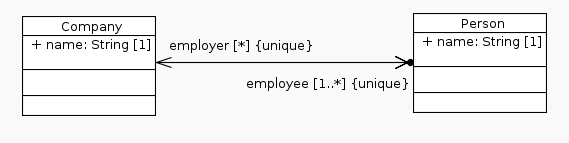
@Test
public void testNormalAssociation() {
Company microsoft = new Company();
microsoft.setName("microsoft");
Company apple = new Company();
apple.setName("apple");
Person john = new Person();
john.setName("john");
john.addToEmployer(microsoft);
john.addToEmployer(apple);
Person joe = new Person();
joe.setName("joe");
joe.addToEmployer(microsoft);
db.commit();
Assert.assertEquals(2, microsoft.getEmployee().size());
Assert.assertTrue(microsoft.getEmployee().contains(john));
Assert.assertTrue(microsoft.getEmployee().contains(joe));
Assert.assertTrue(apple.getEmployee().contains(john));
Assert.assertEquals(2, john.getEmployer().size());
Assert.assertTrue(john.getEmployer().contains(microsoft));
Assert.assertTrue(john.getEmployer().contains(apple));
Assert.assertEquals(1, joe.getEmployer().size());
Assert.assertTrue(joe.getEmployer().contains(microsoft));
Assert.assertTrue(!joe.getEmployer().contains(apple));
}
From the UML specification.
A multiplicity is a definition of an inclusive interval of non-negative integers beginning with a lower bound and ending with a (possibly infinite) upper bound. A multiplicity element embeds this information to specify the allowable cardinalities for an instantiation of this element.
UMLG validates the multiplicities exactly as specified. If a property's multiplicity is [2..5] then the number of instances of that element must be between 2 and 5 inclusive. This can be quite restrictive if a property's lower multiplicity is modeled greater than zero. Having a lower multiplicity greater than zero implies that the entity will not be able to be persisted unless the property has been set.
Upper multiplicity is also validated unless the upper multiplicity is set to *. * indicates that there is no upper
limit specified.
The example below models a one to many relationship between Customer and Purchase and Customer and Account. The customer must have at least one and not more than five accounts. The customer can have any number of Purchases including not having any at all.
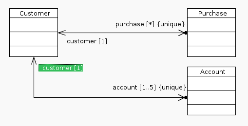
//This will fail as the customer needs at least one account
@Test(expected = UmlgConstraintViolationException.class)
public void testCustomerNeedsAnAccount() {
Customer customer = new Customer();
db.commit();
}
//This will fail as the customer can not have more than 5 accounts
@Test(expected = UmlgConstraintViolationException.class)
public void testCustomerHasMoreThanFiveAccounts() {
Customer customer = new Customer();
Account account1 = new Account();
Account account2 = new Account();
Account account3 = new Account();
Account account4 = new Account();
Account account5 = new Account();
Account account6 = new Account();
customer.addToAccount(account1);
customer.addToAccount(account2);
customer.addToAccount(account3);
customer.addToAccount(account4);
customer.addToAccount(account5);
customer.addToAccount(account6);
db.commit();
}
//Test passes as the customer has 5 accounts and purchases are not required.
@Test
public void testCustomerHasAccounts() {
Customer customer = new Customer();
Account account1 = new Account();
Account account2 = new Account();
Account account3 = new Account();
Account account4 = new Account();
Account account5 = new Account();
customer.addToAccount(account1);
customer.addToAccount(account2);
customer.addToAccount(account3);
customer.addToAccount(account4);
customer.addToAccount(account5);
db.commit();
}
@Test
public void testCustomerCanHaveAnyNumberOfPurchases() {
Customer customer = new Customer();
//Add at least one account.
Account account = new Account();
customer.addToAccount(account);
Random randomGenerator = new Random();
int numberOfPurchases = randomGenerator.nextInt(10000);
for (int i = 0; i < numberOfPurchases; i++) {
Purchase purchase = new Purchase();
customer.addToPurchase(purchase);
}
db.commit();
}
The example below illustrates multiplicities on primitive types.
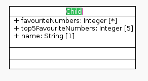
//This will fail as the child needs to 5 top favourite numbers
@Test(expected = UmlgConstraintViolationException.class)
public void testPrimitiveMultiplicityFails() {
Child child = new Child();
child.setName("John");
child.addToFavouriteNumbers(1);
child.addToFavouriteNumbers(2);
child.addToTop5FavouriteNumbers(1);
child.addToTop5FavouriteNumbers(2);
child.addToTop5FavouriteNumbers(3);
child.addToTop5FavouriteNumbers(4);
db.commit();
}
@Test
public void testPrimitiveMultiplicity() {
Child child = new Child();
child.setName("John");
child.addToFavouriteNumbers(1);
child.addToFavouriteNumbers(2);
child.addToTop5FavouriteNumbers(1);
child.addToTop5FavouriteNumbers(2);
child.addToTop5FavouriteNumbers(3);
child.addToTop5FavouriteNumbers(4);
child.addToTop5FavouriteNumbers(5);
db.commit();
}
From the UML specification
A generalization is a taxonomic relationship between a more general classifier and a more specific classifier. Each instance of the specific classifier is also an indirect instance of the general classifier. Thus, the specific classifier inherits the features of the more general classifier.
UML's term for inheritance is generalization.
UMLG supports inheritance. UML's multiple inheritance is not supported.
UMLG supports abstract classes.
The example below illustrates inheritance. The Shape class is abstract.
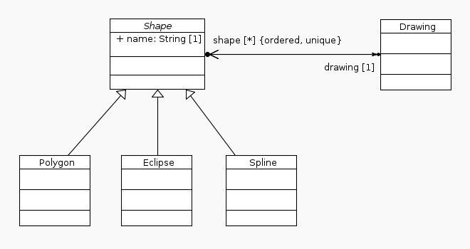
@Test
public void testInheritance() {
Drawing drawing = new Drawing();
Polygon polygon = new Polygon(drawing);
polygon.setName("polygon1");
Eclipse eclipse = new Eclipse(drawing);
eclipse.setName("eclipse1");
Spline spline = new Spline(drawing);
spline.setName("spline1");
db.commit();
Assert.assertTrue(polygon instanceof Shape);
Assert.assertTrue(eclipse instanceof Shape);
Assert.assertTrue(spline instanceof Shape);
Assert.assertEquals("polygon1", polygon.getName());
Assert.assertEquals("eclipse1", eclipse.getName());
Assert.assertEquals("spline1", spline.getName());
}
The example below illustrates polymorphism.
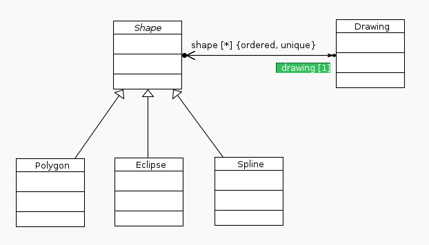
The shapes can be accessed by index as the drawing <-> shape association is ordered.
@Test
public void testPolymorphism() {
Drawing drawing = new Drawing();
Polygon polygon = new Polygon();
Eclipse eclipse = new Eclipse();
Spline spline = new Spline();
drawing.addToShape(polygon);
drawing.addToShape(eclipse);
drawing.addToShape(spline);
db.commit();
Assert.assertEquals(3, drawing.getShape().size());
Assert.assertEquals(polygon, drawing.getShape().get(0));
Assert.assertEquals(eclipse, drawing.getShape().get(1));
Assert.assertEquals(spline, drawing.getShape().get(2));
}
From the UML specification.
An interface is a kind of classifier that represents a declaration of a set of coherent public features and obligations. An interface specifies a contract; any instance of a classifier that realizes the interface must fulfill that contract. The obligations that may be associated with an interface are in the form of various kinds of constraints (such as pre- and post- conditions) or protocol specifications, which may impose ordering restrictions on interactions through the interface.
Since interfaces are declarations, they are not instantiable. Instead, an interface specification is implemented by an instance of an instantiable classifier, which means that the instantiable classifier presents a public facade that conforms to the interface specification. Note that a given classifier may implement more than one interface and that an interface may be implemented by a number of different classifiers
The example below illustrates interfaces.
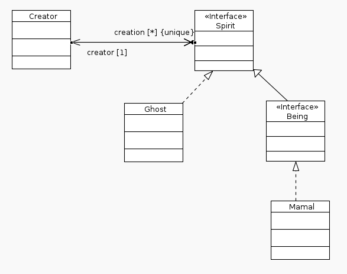
@Test
public void testInterfaces() {
Creator creator = new Creator();
Ghost casper = new Ghost();
creator.addToCreation(casper);
Mamal simba = new Mamal();
creator.addToCreation(simba);
db.commit();
Assert.assertTrue(casper instanceof Spirit);
Assert.assertTrue(simba instanceof Spirit);
Assert.assertTrue(simba instanceof Being);
//For test purposes, ensure the creator is reloaded from the db.
creator.reload();
Assert.assertTrue(creator.getCreation().contains(casper));
Assert.assertTrue(creator.getCreation().contains(simba));
}
From the UML specification.
An enumeration is a data type whose values are enumerated in the model as enumeration literals.
An enumeration literal is a user-defined data value for an enumeration.
The example below illustrates enumeration.
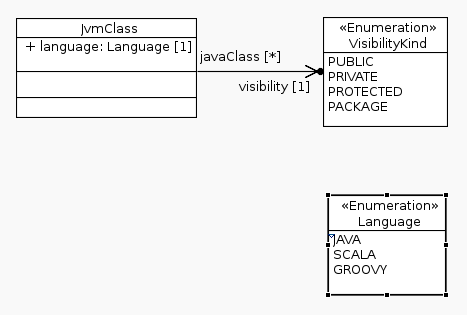
@Test
public void testEnumeration() {
JvmClass javaClass = new JvmClass();
javaClass.setLanguage(Language.JAVA);
javaClass.setVisibility(VisibilityKind.PACKAGE);
JvmClass scalaClass = new JvmClass();
scalaClass.setLanguage(Language.SCALA);
scalaClass.setVisibility(VisibilityKind.PUBLIC);
db.commit();
javaClass.reload();
scalaClass.reload();
Assert.assertEquals(VisibilityKind.PACKAGE, javaClass.getVisibility());
Assert.assertEquals(Language.JAVA, javaClass.getLanguage());
Assert.assertEquals(VisibilityKind.PUBLIC, scalaClass.getVisibility());
Assert.assertEquals(Language.SCALA, scalaClass.getLanguage());
}
From the UML specification.
A model element that has both association and class properties. An AssociationClass can be seen as an association that also has class properties, or as a class that also has association properties. It not only connects a set of classifiers but also defines a set of features that belong to the relationship itself and not to any of the classifiers.
The example below illustrates an association class.
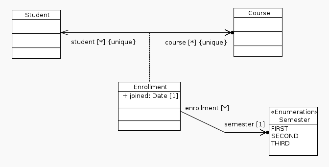
@Test
public void testAssociationClass() {
Student john = new Student();
Course math = new Course();
Enrollment enrollmentMath = new Enrollment();
enrollmentMath.setJoined(new LocalDate());
enrollmentMath.setSemester(Semester.FIRST);
john.addToCourse(math, enrollmentMath);
Course english = new Course();
Enrollment enrollmentEnglish = new Enrollment();
enrollmentEnglish.setJoined(new LocalDate());
enrollmentEnglish.setSemester(Semester.SECOND);
john.addToCourse(english, enrollmentEnglish);
db.commit();
Assert.assertEquals(2, john.getEnrollment().size());
Assert.assertTrue(john.getEnrollment().contains(enrollmentMath));
Assert.assertTrue(john.getEnrollment().contains(enrollmentEnglish));
//UMLG generates convenience methods to get the association class given the other end of the association
Assert.assertEquals(enrollmentMath, john.getEnrollment_course(math));
Assert.assertEquals(enrollmentEnglish, john.getEnrollment_course(english));
//The association class is a class like any other. Its properties can be navigated to.
Assert.assertEquals(math, enrollmentMath.getCourse());
Assert.assertEquals(english, enrollmentEnglish.getCourse());
}
From the UML specification.
A constraint is a condition or restriction expressed in natural language text or in a machine readable language for the purpose of declaring some of the semantics of an element.
...
A user-defined Constraint is described using a specified language, whose syntax and interpretation is a tool responsibility. One predefined language for writing constraints is OCL. In some situations, a programming language such as Java may be appropriate for expressing a constraint. In other situations natural language may be used. Constraint is a condition (a Boolean expression) that restricts the extension of the associated element beyond what is imposed by the other language constructs applied to that element.
UMLG supports constraints specified in OCL.
All constraints are evaluated just before commit is executed.
The example below illustrates constraints on a class.
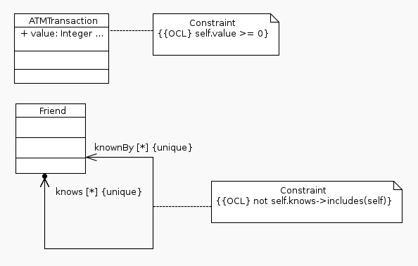
@Test(expected = UmlgConstraintViolationException.class)
public void testConstraintValueFails() {
ATMTransaction atmTransaction = new ATMTransaction();
atmTransaction.setValue(-1);
db.commit();
}
@Test(expected = UmlgConstraintViolationException.class)
public void testConstraintNotSelfFail() {
Friend john = new Friend();
john.addToKnows(john);
db.commit();
}
a
a
a
a
a
a
a
a
a
a
a
a
a
a
a
a
a
a
a
a
a
a
a
a
a
a
a
a
a
a
a
a
a
a
a
a
a
a
a
a
a
a
a
a
a
a
a
a
a
a
a
a
a
a
a
a
a
a
a
a
a
a
a
a
a
a
a
a
a
a
a
a